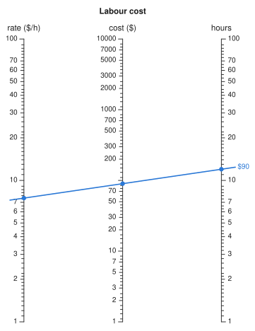
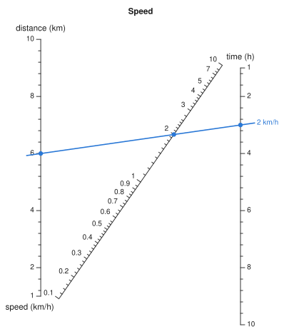
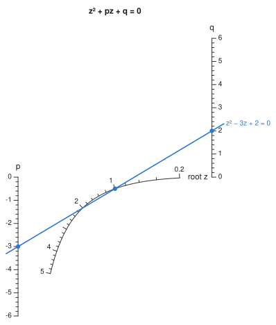
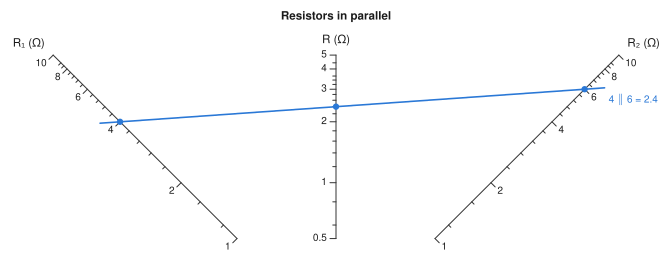

Building charts#
A nomogram works because the points you pick on its scales lie on one straight line exactly when their values satisfy the relation. In this package, every chart is a set of parametric curves value -> (x, y) (Scale). Each construction on this page is a way of choosing those curves so that collinearity matches a given relation. How it works follows a chart in detail from construction to picture.
Parallel scales#
A three-variable relation fits on three parallel scales exactly when it can be separated as
Each fᵢ is a ScaleTransform: LinearScale, LogScale, ReciprocalScale, PowerScale, ComposedScale, or FunctionScale for anything else. A transform carries its own inverse, so the result axis can be computed exactly instead of found by search. additive_nomogram builds the chart; its docstring describes the geometry.
You do not choose where the middle axis goes. It falls between the outer two, nearer the one whose transform spans more. When one range is much wider than the other, the middle axis would sit almost on top of its neighbour, and its labels would look like the neighbour's. To prevent this, the narrower axis is shortened and centred until the middle axis is at least a fifth of the way across. The middle axis moves to match, so readings do not change. Use max_modulus_ratio to trade the narrow axis's length against that spacing, or set it to Inf to keep full-height axes whatever their ranges.
Products become sums under a logarithm, and multiplicative_nomogram takes the logarithms for you:
using Nomograms
cost = multiplicative_nomogram(
Variable(:rate; domain = (1, 100), label = "rate (\$/h)"),
Variable(:hours; domain = (1, 100), label = "hours"),
Variable(:cost; label = "cost (\$)");
title = "Labour cost",
)
drawing(cost; isopleths = [isopleth(cost; rate = 7.5, hours = 12, label = "\$90")])
Ratios, and the N-chart#
ratio_nomogram builds an N-chart (also called a Z-chart) for f₁(u) / f₂(v) = f₃(w). It has two vertical scales joined by a diagonal, and you read the result on the diagonal. Doerfler's "The Lost Art of Nomography" derives the classic construction (see the Bibliography).
speed = ratio_nomogram(
Variable(:distance; domain = (1, 10), label = "distance (km)"),
Variable(:time; domain = (1, 10), label = "time (h)"),
Variable(:speed; label = "speed (km/h)");
title = "Speed",
)
drawing(speed; isopleths = [isopleth(speed; distance = 6, time = 3, label = "2 km/h")])
multiplicative_nomogram can also chart ratios, using logarithms. The advantage of the N-chart is that it needs no logarithms: the outer scales stay linear, so precision is even along them and you can interpolate between ticks by eye.
Two details of this construction affect what you see. The textbook derivation gives both outer scales the same scale factor so that the ratio comes out directly. Here the diagonal's own scale absorbs the ratio of the two factors instead, so each outer axis is fitted to the canvas separately. Also, the diagonal is a projective scale, s = k·r / (k·r + 1), so a ratio spanning several decades is spread across it roughly logarithmically. In that case the result axis uses decade-based tick values; linear ticks would leave nothing between 0.1 and 2, which covers most of the diagonal. To override this, pass tickstyle = :linear on the Variable.
Other relations: the determinant method#
The parallel and N-chart constructions are particular solutions of the collinearity condition. determinant_nomogram accepts any other solution you can write down. Give each variable a curve, and the package measures their combined bounding box and maps it onto the canvas. This is the determinant method of the nomography textbooks; Doerfler's overview is a good worked introduction to it.
Once the first two scales are fixed, deriving a curve is mechanical. Put p on x = 0 at height p and q on x = 1 at height q. A line between them crosses x = x₃ at p + x₃(q - p), so it meets a third scale exactly when (1 - x₃)·p + x₃·q = y₃. To make that equation say z·p + q + z² = 0, match coefficients:
This gives x₃ = 1/(1 + z) and y₃ = -z²/(1 + z), a curved scale for the roots of a quadratic.
quad = determinant_nomogram(
Variable(:p; domain = (-6, 0)) => p -> (0.0, p),
Variable(:q; domain = (0, 6)) => q -> (1.0, q),
Variable(:z; domain = (0.2, 5), label = "root z") => z -> (1 / (1 + z), -z^2 / (1 + z));
relation = (p, q, z) -> z^2 + p * z + q,
title = "z² + pz + q = 0",
)
roots = evaluate_all(quad; p = -3, q = 2)
drawing(quad; isopleths = [isopleth(quad, roots[1]; label = "z² − 3z + 2 = 0")])
[sol.z for sol in roots]2-element Vector{Float64}:
1.0000000000000007
1.9999999999999998There are two answers because a quadratic has two roots. On the chart, one alignment line meets the curved scale twice. This chart for the quadratic is a classic one; Doerfler draws it after Adams (1964) and Otto (1963).
An affine map keeps collinear points collinear, so fitting the curves to the canvas cannot change what the chart computes. This includes the default fit, which scales the two axes by different factors to fill the canvas. Pass preserve_aspect = true to scale both axes by the same factor and centre the result.
Getting the determinant form right is the hardest part of designing a chart by hand, and a chart with a small error in it still draws normally. max_relation_residual solves the chart over a grid of inputs and checks each answer against the relation:
max_relation_residual(quad)7.105427357601002e-15It returns NaN (rather than zero) when there is no relation to check, or when no input in the grid produced a solution.
Reshaping a chart#
Projective maps also keep collinear points collinear, and they are a much larger family than affine maps. They can turn parallel scales into converging ones and change the spacing along an axis. Nomographers have long reshaped charts this way; Doerfler's overview ends with these transformations.
project applies a projective map to a chart, and the reshaped chart gives the same answers:
parallel = additive_nomogram(
Variable(:R1, ReciprocalScale(); domain = (1, 10), label = "R₁ (Ω)"),
Variable(:R2, ReciprocalScale(); domain = (1, 10), label = "R₂ (Ω)"),
Variable(:R, ReciprocalScale(); label = "R (Ω)"),
)
corners = [(0, 0), (70, 0), (70, 100), (0, 100)]
skew = project(parallel, corners => [(14, 0), (56, 0), (70, 100), (0, 100)])
drawing(skew; isopleths = [isopleth(skew; R1 = 4, R2 = 6, label = "2.4")])![Example block output]()
(evaluate(parallel; R1 = 4, R2 = 6).R, evaluate(skew; R1 = 4, R2 = 6).R)(2.4, 2.4)projective_transform builds the map from four point correspondences. You name the corners of a quadrilateral and where they should end up, instead of writing out nine coefficients. A map whose bottom row is [0 0 1] is affine (translation, scaling and shear); any other map adds true perspective.
A projective map can move the bounding box anywhere, so the result is fitted to the canvas again. That fit is affine, and an affine map composed with a projective one is still projective, so the answers are still unchanged.
This means you can reshape a chart freely while designing it. You can pull open a region where the ticks are crowded without re-deriving anything, and max_relation_residual will confirm that the reshaped chart is still correct.
Watch out for the map's vanishing line, where its denominator is zero. If that line crosses a scale's domain, points there are sent to infinity. project then throws an error naming the affected scale, instead of returning a chart full of Inf.
Fans#
Parallel lines meet at a point at infinity, and a projective map can bring that point onto the page. Every axis then runs through it, and the chart becomes a fan of spokes. fan does this:
title = "Resistors in parallel"
fanned = fan(additive_nomogram(
Variable(:R1, ReciprocalScale(); domain = (1, 10), label = "R₁ (Ω)"),
Variable(:R2, ReciprocalScale(); domain = (1, 10), label = "R₂ (Ω)"),
Variable(:R, ReciprocalScale(); label = "R (Ω)");
title,
))
drawing(fanned; isopleths = [isopleth(fanned; R1 = 4, R2 = 6, label = "4 ∥ 6 = 2.4")])
The fanned chart gives the same answers as the original, and fan works on compound charts and nets too. Because straight lines stay straight, the spokes end on a straight chord, not an arc. At the default spread of 90° the tips line up level, and wider fans leave the middle spokes shorter than the outer ones. The map also squeezes everything near the hub, so fan lays the chart out both ways round and keeps the one that labels more values. Here the crowded ends of the reciprocal scales, from 4 to 10, went to the rim.